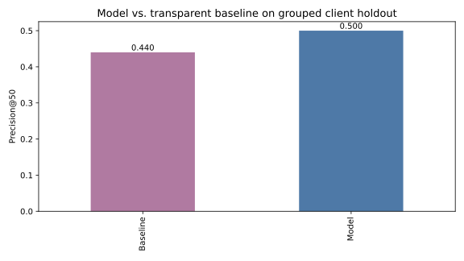
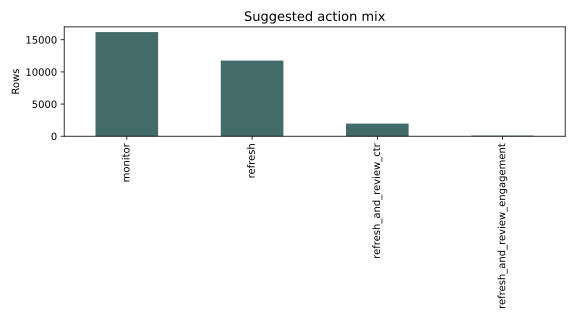
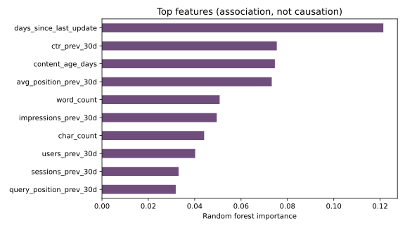

FlyRank ML internship · content refresh priority
Which content pages look worth reviewing first?
A reproducible ranking analysis for editorial review, built from the gated FlyRank warehouse release.
Abstract
We asked whether a model could rank content pages for refresh review better than a transparent stale-and-visible rule. We used 111,133 anonymized content rows across 49 pseudonymous client groups and defined the observed target as last-30d impressions < 80% of prior-30d impressions. A random forest was evaluated against the rule with a client-grouped holdout and leakage exclusions. On that holdout, the model reached Precision@50 0.580 versus 0.580 for the rule, with a 59.8% base rate. The output is decision support for human review, not a claim about what will cause Google traffic to change.
1. Introduction / problem
Editorial teams have limited time, so the useful output is a ranked queue rather than a yes/no flag. A false positive spends review time on a page that may not need attention; a false negative leaves a potentially important declining page unreviewed. The model helps organize signals, while an editor still checks the page and its context.
2. Data
This reproducible run uses the gated FlyRank warehouse release: 111,133 rows and 49 pseudonymous client groups. The target is the observed outcome last-30d impressions < 80% of prior-30d impressions; it is not a future intervention outcome. We excluded label-derived fields and identifiers from features. No client names, domains, URLs, titles, queries, credentials, or raw exports appear in the paper.
3. Methodology
Features are numeric performance and content fields plus one-hot categorical context, with missingness flags and median imputation. The transparent baseline combines percentile ranks for staleness, visibility, CTR risk, and position risk. The model is a seeded random forest. We report both a stratified random split and a client-grouped split; the grouped split is primary because rows share pseudonymous client context.
4. Results
| Approach | Precision@20 | Precision@50 | Average precision | ROC AUC |
|---|---|---|---|---|
| Baseline · random split | 0.900 | 0.820 | 0.724 | 0.613 |
| Model · random split | 1.000 | 1.000 | 0.847 | 0.770 |
| Baseline · grouped split | 0.650 | 0.580 | 0.710 | 0.651 |
| Model · grouped split | 0.500 | 0.580 | 0.716 | 0.696 |

5. Limitations & honest framing
These are observed associations in the gated FlyRank warehouse release. The target is a snapshot proxy, so the analysis does not establish that refreshing a page will cause traffic recovery, nor does it predict or reverse-engineer Google's ranking system. Client-grouped performance is a better stress test than a random row split, but it still does not establish performance on a future time window or on a different warehouse release. Low-volume pages, missing history, seasonality, and unobserved editorial decisions can change the recommendation.
6. Ranked recommendations
Use the queue as a reviewer aid: start with high-confidence items that combine model risk with visible demand, then check CTR, engagement, staleness, and content depth. No page should be rewritten automatically from this score. The current queue contains:
| Suggested action | Rows |
|---|---|
| monitor | 53,418 |
| refresh | 48,539 |
| refresh and review ctr | 5,299 |
| refresh and review engagement | 3,852 |
| expand and refresh | 25 |

7. Reproducibility
From a fresh clone, install requirements.txt, then run the completed notebooks in work/notebooks/ from top to bottom. The analysis uses random seed 42; metrics receipts are stored in work/outputs/ml09_validation_results.json, work/outputs/ml10_action_playbook_results.json, and work/outputs/capstone_results.json. The source notebooks and helper module are in the public repo.

8. Acknowledgments & data credit
Built on the FlyRank ML Internship dataset. This page uses the gated FlyRank warehouse release and follows the repository's public-safety rules.